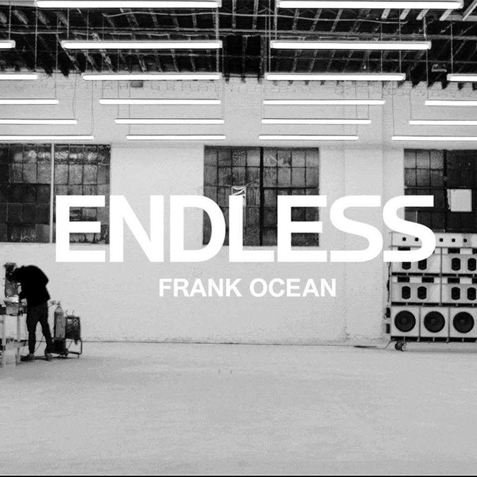
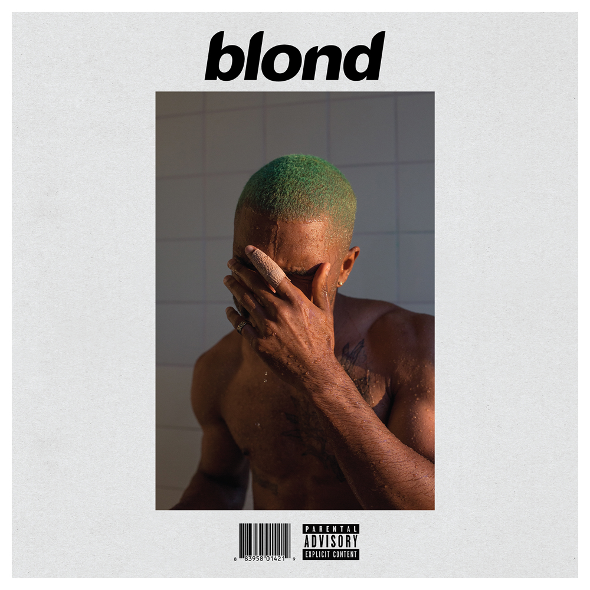

ALBUMS

2012

Channel Orange
This was his first studio album, changing his focus and creating a very unconventional music style using different sound techniques and dialogue. It made headlines as the best album release of 2012, as well as one of the best in the 2010’s, and all time--bringing Ocean a grammy.
2016

Endless
As a visual album, this was the last album he has recorded under a record label. Although it got amazing reviews from music critics, this album is now hard to find if wanting to be legally downloaded. It was taken off streaming services and was remastered to only be on CD and Vinyl, making it a rare gem.
2016

Blond
This was Frank Ocean's most highly anticipated album, as it had been delayed several times due to industry complications. After eventually being released under his own independent label, the wait paid off as this is his most popular album to date, breaking the music charts.